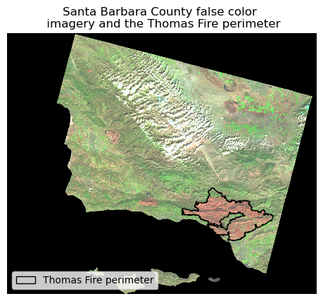
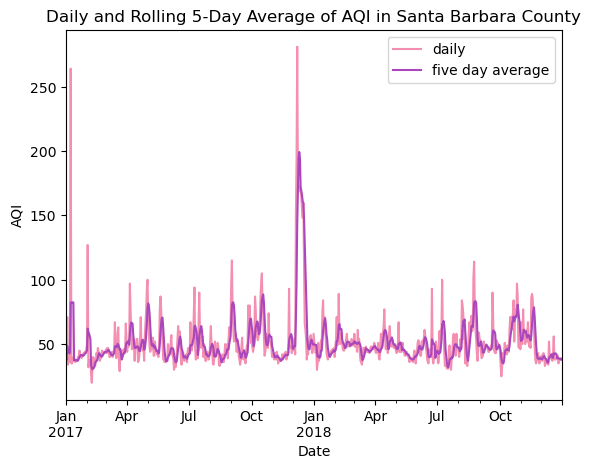

The Thomas Fire occurred in Santa Barbara County in December 2017, covering an area of around 280,000 acres. Wildfires are a natural feature on our landscape and carry many positive benefits, including nutrient cycling and sprouting of fire-dependent vegetation. When they become too severe, burning a large area or burning too intensely, they can carry negative effects, like enabling devastating landslides through the loss of vegetation. Besides their immediate threat to people, wildfires are also a health risk through the emission of particulate matter.
Highlights of analysis
This analysis will visualize the burn scar of the Thomas Fire using Landsat imagery and false color band combinations. We will show techniques to modify and visualize raster data, as well as plotting raster and vector data together. We will also visualize the daily AQI index, a measure of air quality, for Santa Barbara County during a window of time that includes the Thomas Fire. This part of the analysis will show techniques to clean dataframes, join data together, and work with time series data to calculate a moving average.
Datasets
Landsat 8
The Landsat data was processed and downloaded from the Microsoft Planetary Computer. The area of interest is cropped to show Santa Barbara County. The data is stored as an xarray.Dataset. It includes 5 data variables, which represent the 5 color bands available for visualization.
This dataset shows fire perimeters, including wildfires and prescribed burns, for the State of California. The data was created by the California Department of Forestry and Fire Protection (CalFire) and is hosted on the California State Geoportal. It includes information like the year of the fire, the fire footprint, and the area burned.
This dataset was created by the US Environmental Protection Agency and describes daily air quality index values by county in the United States. Data are available as .csv files by year from 1980-2022. For our analysis, we used data from 2017 and 2018.
# import libraries and functionsimport osimport geopandas as gpdimport pandas as pdimport numpy as npimport xarray as xrimport rioxarray as rioxrimport matplotlib.pyplot as pltimport matplotlib.patches as mpatchesimport matplotlib.path as mpathimport matplotlib.lines as mlinesfrom shapely.geometry import box
Import and prepare our imagery and fire perimeter data
To visualize the Thomas Fire burn scar, we will use the California Fire Perimeters and Landsat imagery.
Code
# read in the CA fire perimeters and landsat dataca_fire = gpd.read_file(os.path.join(os.getcwd(), 'data', 'California_Fire_Perimeters_2017', 'California_Fire_Perimeters_2017.shp'))landsat = rioxr.open_rasterio(os.path.join(os.getcwd(), 'data', 'landsat8-2018-01-26-sb-simplified.nc'))
Next we need to prepare our data for visualization. Since our xarray.Dataset needs to be two-dimensional to plot, we’ll drop the single band and it’s coordinates from our dimensions. We’ll also select just the Thomas Fire from our fire perimeters and make sure our two datasets are in the same coordinate reference system.
Code
# drop the band dimension and its coordinates from the landsat raster because there is only one bandlandsat = landsat.squeeze()landsat = landsat.drop('band')# select the thomas fire perimeterthomas_fire = ca_fire[ca_fire.FIRE_NAME =='THOMAS']# set the layers on a common CRSthomas_fire = thomas_fire.to_crs(landsat.rio.crs)
Visualizing the Thomas Fire burn scar
We can display the burn scar of the Thomas Fire by using false color imagery. We’ll plot the band combination of shortwave infrared, near infrared, and red. Newly-burned land reflects short wave infrared intensely, so the false color imagery should display the burn scar in bright red. We’ll also plot the perimeter of the Thomas Fire on top of the imagery to verify.
Code
## map the Thomas Fire perimeter on top of a false color image of Santa Barbara County# initialize the map and turn the lat/long ticks offfig, ax = plt.subplots()ax.axis('off')# plot the false color image with bands shortwave IR, near IR, and redlandsat[['swir22', 'nir08', 'red']].to_array().plot.imshow(robust =True)# plot the Thomas Fire perimeterthomas_fire.plot(ax = ax, color ='none', edgecolor ='black')# create a graphical patch for the legendthomas_fire_patch = mpatches.Rectangle((0, 0), 0, 0, facecolor ='none', edgecolor ='black', label ='Thomas Fire perimeter')# create a legendax.legend(handles = [thomas_fire_patch], loc ='lower left')# set map titleplt.title("Santa Barbara County false color \n imagery and the Thomas Fire perimeter")# show the plot without the output text_ = plt.show()

Import and prepare our air quality index data
Next we’ll read in our daily AQI data for 2017 and 2018.
Code
# read in the 2017 AQI data aqi_17 = pd.read_csv("https://aqs.epa.gov/aqsweb/airdata/daily_aqi_by_county_2017.zip")# read in the 2018 AQI dataaqi_18 = pd.read_csv("https://aqs.epa.gov/aqsweb/airdata/daily_aqi_by_county_2018.zip")
Next we’ll concatenate the dataframes into one, clean up column names, and subset data for Santa Barbara County
Code
# concatenate the 2017 and 2018 dataframes to create a new dataframeaqi = pd.concat([aqi_17, aqi_18])# clean up the column names in our dataframe by changing them to snakecaseaqi.columns = aqi.columns.str.lower().str.replace(' ','_')# subset data from Santa Barbara County, remove the columns 'state_name', 'county_name', 'state_code', and 'county_code' to create a new dataframeaqi_sb = aqi[aqi['county_name'] =='Santa Barbara'].drop(['state_name', 'county_name', 'state_code', 'county_code'], axis =1)
To prepare our data for plotting, we’ll need to turn the date column into a datetime object. This will allow us to work with the time series properly and calculate the 5 day rolling average of AQI over the 2 year period in Santa Barbara.
Code
# update the date column of aqi_sb to be a datetime objectaqi_sb.date = pd.to_datetime(aqi_sb.date)# update the index of aqi_sb to be the date columnaqi_sb = aqi_sb.set_index('date')# add the mean 5 day rolling average of AQI to the aqi_sb dataframe as a new columnaqi_sb = aqi_sb.assign(five_day_average = aqi_sb.aqi.rolling('5D').mean())
Now we can plot our daily and 5 day rolling average of AQI in Santa Barbara County.
Code
# initialize plotfig, ax = plt.subplots()# plot daily and five day average aqi_ = aqi_sb[['aqi', 'five_day_average']].plot(ax = ax, title ='Daily and Rolling 5-Day Average of AQI in Santa Barbara County', xlabel ='Date', ylabel ='AQI', color = {'aqi':'#F48FB1', 'five_day_average':'#AB47BC'})# change legend labels_ = ax.legend(labels = ("daily", "five day average"))

Discussion
As we can see from the final plot, there was a large spike in AQI during December 2017 in both the daily and five day average. Our daily values spiked during this time between 250 and 300, which is classified as “very unhealthy” in the AQI Index. The five day average during this period spiked above 200, which would also be classified as “very unhealthy”.